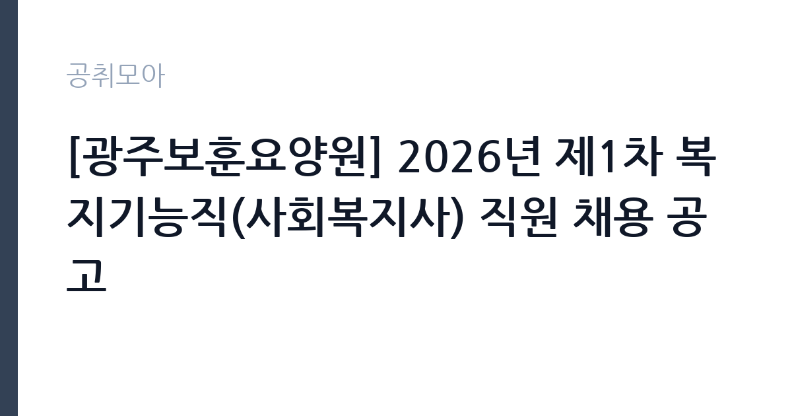

[공공기관] [광주보훈요양원] 2026년 제1차 복지기능직(사회복지사) 직원 채용 공고
한국보훈복지의료공단 · 전남광주 · 마감 2026-11-16 (D-14) · 출처 잡알리오

한눈에 보는 모집 조건
| 기관 | 한국보훈복지의료공단 |
|---|---|
| 공고명 | [광주보훈요양원] 2026년 제1차 복지기능직(사회복지사) 직원 채용 공고 |
| 고용형태 | 정규직 |
| 근무지 | 전남광주 |
| 게시일 | 2026-11-02 |
| 마감일 | 2026-11-16 (D-14) |
지원자격, 이렇게 읽으세요
- (필수) 사회복지사 2급 이상 자격증 소지자
정규직 채용은 기간의 정함이 없는 근로계약을 전제로 합니다. 수습 기간을 두고 평가한 뒤 정규직으로 확정하는 절차가 일반적이며 기관의 인사 규정과 임금 체계를 적용받습니다. 이번 공고는 한국보훈복지의료공단이 직접 진행하는 자체 전형입니다. 사회복지사무원 채용은 학력·전공 제한을 두지 않는 대신 회계 업무 역량을 확인하는 경우가 많습니다. 전산세무·전산회계·회계관리 같은 자격을 우대하고, 관련 자격 보유자는 면접에서 비정량 요소로 반영됩니다. 사회복지사 자격을 요구하는 공고도 있으므로 모집분야별 요건을 확인해야 합니다. 계약 기간이 정해진 기간제 신분이고 정년 기준이 적용됩니다. 자격증 유효 기간과 등록 상태를 접수 전에 점검하십시오. 학력이나 전공 요건이 없는 공고라도 제출서류 목록은 그대로 적용되므로 서류 준비 부담은 줄지 않습니다. 자격증은 유효 기간과 등록 상태를 확인해야 합니다. 갱신이 필요한 자격이라면 갱신 여부를 먼저 점검하십시오. 이 공고 원문에 적힌 응시 조건 문구는 '(필수) 사회복지사 2급 이상 자격증 소지자'입니다. 문구를 그대로 읽고 본인 해당 여부를 하나씩 표시해 두면 서류 단계에서 탈락하는 일을 줄일 수 있습니다.
이 공고의 포인트
이 건은 한국보훈복지의료공단이 같은 시기에 낸 6개 모집분야 가운데 복지행정(사회복지사무원) 직무입니다. 다른 직무 공고와 요건이 다르므로 지원 전에 모집분야 표를 대조해야 합니다. 이 공고의 첫 번째 포인트는 고용 형태입니다. 수습 기간 평가를 통과하면 기간의 정함이 없는 신분이 되어 고용이 안정됩니다. 두 번째는 업무 범위가 명확하다는 점입니다. 복지행정(사회복지사무원) 직무로 채용되므로 배치 이후 담당 업무가 크게 흔들리지 않습니다. 세 번째는 근무지입니다. 전남광주 지역 근무로 수도권 공고에 비해 지원자 분포가 넓지 않아 상대적으로 경쟁이 분산되는 경우가 있습니다. 처우와 근무 형태가 표로 정리되어 있어 비교해 보기에 편한 공고입니다. 선발 인원은 공고문에 명시되어 있으니 모집분야 항목을 함께 확인하십시오.
전형은 어떻게 진행되나
전형은 서류심사와 면접심사를 기본으로 하고 직무에 따라 필기나 실기, 체력검정이 추가됩니다. 서류 단계에서는 응시자격 충족 여부와 제출서류 형식을 확인하며 이 단계에서 탈락하는 지원자가 적지 않습니다. 면접은 직무 이해도와 경험을 확인하는 방식으로 진행되고 발표는 개별 통보나 홈페이지 게시로 이뤄집니다. 최종합격 이후에는 결격사유 조회와 채용 신체검사가 이어지며 이 절차에서 문제가 확인되면 합격이 취소될 수 있습니다. 구체적인 전형 단계와 배점은 공고문에 표로 정리되어 있으니 원문을 기준으로 준비하십시오. 동점자 처리 기준이 공고문에 명시되어 있으니 배점 항목을 미리 확인해 두십시오.
원문에서 확인한 전형 방식
- (필수) 사회복지사 2급 이상 자격증 소지자 - (필수) 남자의 경우 병역을 필하였거나 면제된 자 - (필수) 공단 인사규정 제18조(결격사유 및 임용취소)에 해당하지 않는 자 - (필수) 공단 인사규정 제44조(정년)에 따라 정년(만60세)에 도달하지 않은 자
이런 분께 추천해요
- 회계 자격이나 정산 실무 경험이 있는 분
- 입소자·보호자 응대에 거부감이 없는 분
- 계약 기간 동안 지속적으로 근무할 수 있는 분
지원 전 체크리스트
- 응시자격 요건과 경력 기준을 충족하는가 — 경력은 증명서로 입증해야 합니다
- 수습 기간과 정규직 전환 조건을 확인했는가
- 제출서류 목록을 모두 준비했는가 — 누락 시 서류 단계에서 탈락합니다
- 접수 마감 2026-11-16 이전에 접수 방식을 확인해 제출했는가
모집 일정과 제출 타이밍
공고 게시일은 2026-11-02, 접수 마감은 2026-11-16입니다. 준비 기간은 약 14일로 서류 준비와 자격 증빙을 함께 처리하기에는 넉넉하지 않은 편입니다. 첫 이틀 안에 공고문과 첨부 서식을 내려받아 요건을 확인하고 남은 기간에 증빙 서류를 발급받는 일정이 현실적입니다. 면접은 서류 합격자 발표 후 짧은 간격으로 진행되는 경우가 많으므로 서류 제출과 동시에 면접 준비를 시작하는 편이 안전합니다. 마감일에는 접수 시스템이 몰리므로 하루 전까지 제출을 마치는 것이 좋습니다. 제출 서류는 공고문에 적힌 순서대로 정리하면 담당자가 확인하기 쉬워 누락이 줄어듭니다.
직무 이해하기: 공공기관
한국보훈복지의료공단은 국가유공자와 보훈대상자의 진료와 복지를 담당하는 공공기관으로, 전국에 보훈병원과 보훈요양원을 운영합니다. 병원은 진료과와 검사실, 재활·요양 부서로 나뉘고 의료기술직·기능직·업무지원직이 함께 근무합니다. 국가유공자 진료라는 기관 성격상 의료 정보와 개인정보 보호 요건이 엄격하고, 교대·당직 근무가 포함되는 자리가 많습니다. 복지기능직 사회복지사무원은 요양원이나 복지시설에서 입소자 지원과 행정 실무를 함께 맡습니다. 입소 상담과 서류 접수, 급여비용 청구와 정산, 후원금·물품 관리 같은 회계 업무가 중심입니다. 입소자와 보호자 응대, 각종 신고와 보고 자료 작성도 일상 업무입니다. 요양기관 평가와 지자체 점검에 대비한 서류 정리가 몰리는 시기가 있습니다. 시설 운영 시간에 맞춰 근무하고, 교대나 당직이 포함될 수 있습니다. 업무 기록은 현장 확인과 사후 점검에 그대로 쓰이므로 기재 누락이 곧 평가 손실로 이어집니다. 업무 강도와 근무 시간대는 부서 배치에 따라 달라지므로 면접에서 확인하는 것이 가장 정확합니다. 이 건의 근무 대상 지역·부서는 원문 기준 '사회복지사'입니다 원문에 '(필수) 사회복지사 2급 이상 자격증 소지자'라는 조건이 명시되어 있습니다.
자기소개서 작성 팁
지원서는 회계·행정 실무 경험을 구체적으로 쓰는 것이 효과적입니다. 담당했던 정산 업무와 처리 건수, 사용한 회계 프로그램을 적으십시오. 보호자 응대에서 갈등을 줄인 사례도 좋은 소재입니다. 시설의 운영 형태와 입소자 특성을 미리 확인해 지원 동기에 연결하면 준비도가 드러납니다. 문항별 글자 수 제한을 먼저 확인하고, 각 문항의 첫 문장에 결론을 배치하는 방식이 읽기 쉽습니다. 지원 동기는 기관의 어떤 사업에 기여하겠다는 한 문장으로 시작하고, 이어서 본인의 경험을 근거로 붙이십시오. 감점을 피하려면 다른 기관에 보낼 수 있는 범용 문장을 그대로 쓰지 않는 것이 중요합니다. 기관 이름과 사업명이 문장 안에 자연스럽게 들어가야 준비도가 드러납니다.
면접 준비 포인트
면접에서는 회계 처리와 응대 방식을 확인합니다. 증빙이 맞지 않는 지출을 발견하면 어떻게 처리할지, 보호자가 급여비용에 이의를 제기하면 어떤 순서로 확인할지 묻습니다. 개인정보와 의료·복지 정보를 다루는 직무이므로 보안 의식을 언급하십시오. 시설 근무 경험이 있다면 입소자 응대 사례로 연결하십시오. 본인 경험을 말할 때는 기간, 역할, 결과를 순서대로 정리해 두면 질문이 바뀌어도 활용할 수 있습니다. 면접 당일 신분증과 제출서류 원본을 요구하는 경우가 있으니 공고문의 준비물 목록을 확인하십시오.
급여·근무조건 읽는 법
알리오(공공기관 경영정보 공개시스템) 2025년 결산 경영공시 기준으로 한국보훈복지의료공단 일반정규직 1인당 평균보수액은 7,172만원, 공시된 신입사원 초임은 4,170만원입니다. 평균보수액은 기본급에 고정수당·실적수당·성과상여금·급여성 복리후생비를 모두 합산한 값이라 월 기본급만 보고 판단하면 실제와 크게 어긋납니다. 정규직 신입의 경우 공시된 신입사원 초임이 출발점이 되고, 이후 호봉과 성과급에 따라 평균보수에 접근합니다. 보훈복지의료공단 계약직 보수는 공단의 계약직 임금 기준을 따르며, 기본급에 수당과 상여가 더해집니다. 계약 기간이 정해져 있어 월 보수와 근무 개월 수를 곱한 총액으로 비교해야 합니다. 정확한 금액과 수당 항목은 공고문 처우 항목에서 확인하십시오. 2026년 적용 최저임금은 시급 10,320원, 월 환산 2,156,880원(주 40시간·209시간 기준)입니다. 고용노동부 고시 제2025-47호로 확정된 금액입니다. 공고문에 금액이 제시되지 않은 항목은 원문 보수표나 처우 설명에서 확인해야 하며 확인되지 않은 수치는 쓰지 않는 것이 원칙입니다. 비교할 때는 월 급여뿐 아니라 상여·명절휴가비·복지포인트·초과근무수당까지 포함한 연간 총액으로 계산하십시오. 기간제라면 계약 기간 동안의 총액을, 무기계약이라면 호봉 상승과 정년까지의 누적 소득을 기준으로 판단하는 편이 정확합니다.
자주 묻는 질문
- 선발 인원은 몇 명인가요?
공고문의 모집분야 항목에 직종별 인원이 표로 제시되어 있습니다. 첨부된 공고문 원문에서 확인하십시오. - 근무지는 어디인가요?
전남광주 지역의 한국보훈복지의료공단 소속 근무지입니다. 세부 주소와 출퇴근 조건은 원문 공고문에서 확인할 수 있습니다. - 보수는 얼마인가요?
채용 신분(정규직)과 기관 임금 규정에 따라 정해지며 구체적인 금액은 공고문 처우 항목에 제시됩니다. 금액이 공개되지 않은 경우에는 원문의 보수표를 확인하십시오.
함께 보면 좋은 공고
[공공기관] 2026년 한국특허정보원 체험형 청년인턴 채용 — 마감 2026-11-18[공공기관] 한국폴리텍대학 진주캠퍼스 행정지원직(사무직원 휴직 대체인력) 채용 공고 — 마감 2026-11-10[공공기관] 대구경북첨단의료산업진흥재단 2026년 3차 정원외 계약직원 채용공 — 마감 2026-11-17출처: 잡알리오 공개정보를 바탕으로 공취모아가 정리한 안내글입니다. 모집 조건·일정은 변경될 수 있으니 지원 전 반드시 원문 공고문을 확인하세요. 본 글은 정보 제공용이며 합격을 보장하지 않습니다.